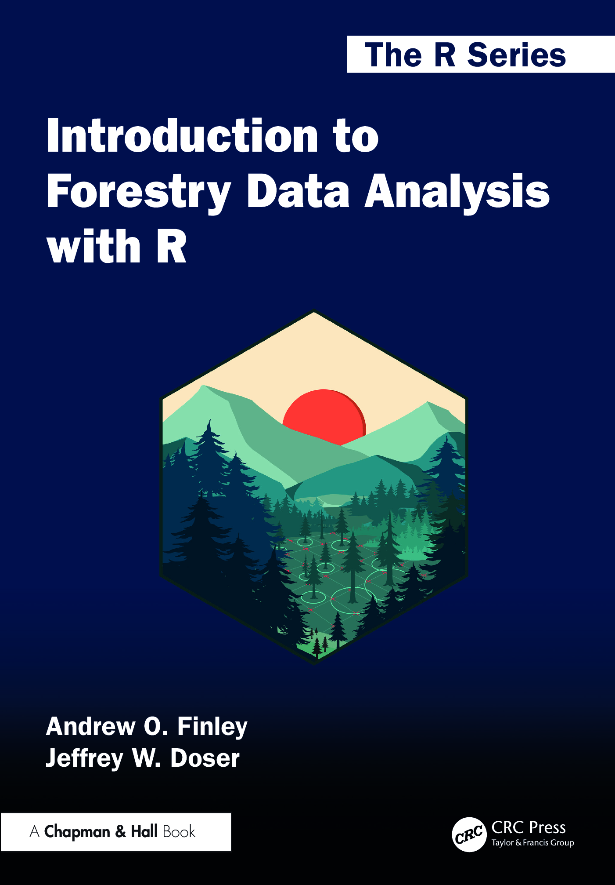

Books

Introduction to Forestry Data Analysis with R
Andrew O. Finley & Jeffrey W. Doser
This book equips students and practitioners with the skills needed to move confidently between field measurements and modern analytical workflows. As forestry, ecology, and natural resource management become increasingly data-driven, professionals must not only collect information but also organize, analyze, visualize, and defend quantitative results.
Distinct from both generic programming texts and traditional mensuration references, this volume teaches R through real forestry datasets and operational examples, pairing classical forest inventory methods with transparent, step-by-step computational workflows for modern, reproducible analysis.